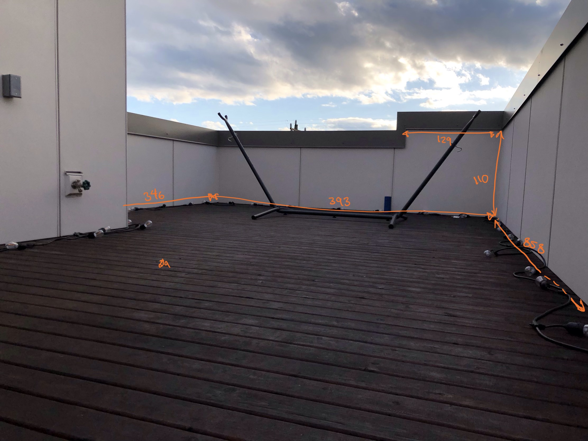
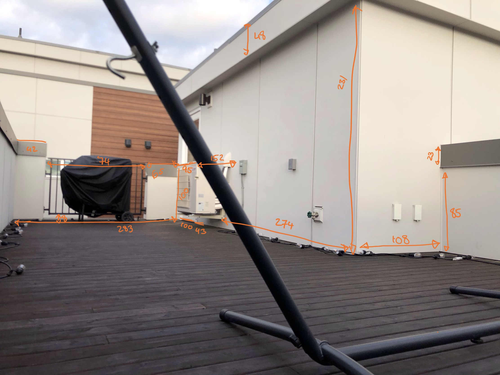
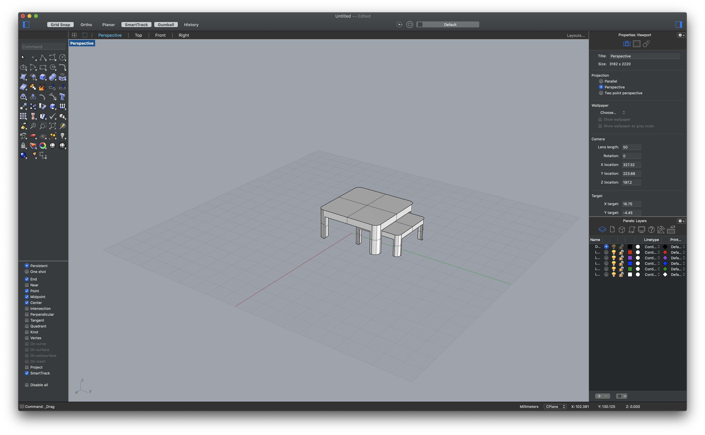

Brief description of my A7: Final project proposal
Because of COVID-19, I decided to design and build the furniture needed for my outdoor space after graduation! But this space (pictured with measurements below) is on 4th floor.
So, I decided to minimize my moving efforts, and create a detailed design (1/20th ratio) prior to purchasing and carrying items for my final project. Another objective of mine with this effort is to practice joining/merging separate surfaces in Rhino since that’s been a troubling area for me in the past.


I began this project by modeling the layout of the space, and extruded the walls based on measurements.
Then, I modeled the floor in Grasshopper, and shaped it to the layout.
From here, big picture was complete and I started transitioning to the lower level details.
I began by modeling the pieces that already exist. First, I modeled the AC, hammock frame, grill, and railing behind the grill.
The only piece I had trouble with modeling was the hammock frame, which I found a model on Thingiverse.
Then I started searching for a shading solution and found this Link, and modeled it based on measurements found!
For the seating, which was the only remaining item, I decided to take measurements from my couch, and create a modular design that’d allow me to move pieces around as needed.
I also used the same base design for tables.

Then, my model was complete! Woohoo!!
Here is an images of my finished model
I also 3D printed the entire model! To create this entire space, 29 individually printed pieces came together!
Here’s a collection of all 3dm, stl, and gcode files.